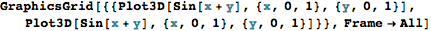
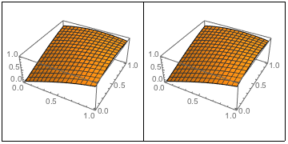
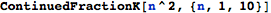
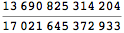
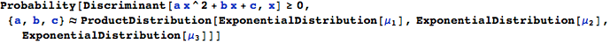
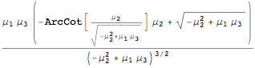
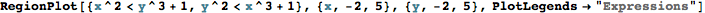
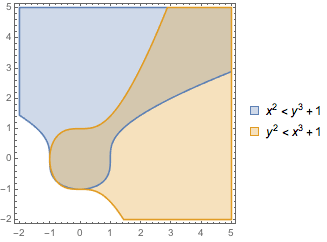

Hyperbolic Geometry
Chapter 1
The Receiver Operating Characteristic “ROC” illustrates the performance of the binary classifier by plotting the false alarm probability (PFA) on the horizontal axis and the detection probability (
PD) on the vertical axis. The area under the ROC-curve (AUC) is used to provide a single-figure quantification of the performance of the binary classifier based on the ROC. This article provides an interpretation of the AUC and connects the AUC to the Wilcoxon–Mann–Whitney statistic, which is a nonparametic test to compare two populations. This derivation is pretty hard to find but the connection between the AUC and the Wilcoxon–Mann–Whitney test is important insofar as it provides some perspective on the seemingly arbitrary use of AUC to quantify the performance of the binary classifier.


Sample code
Verbatim Code Style
Formula


Image processing
Large formula


Large color pad

